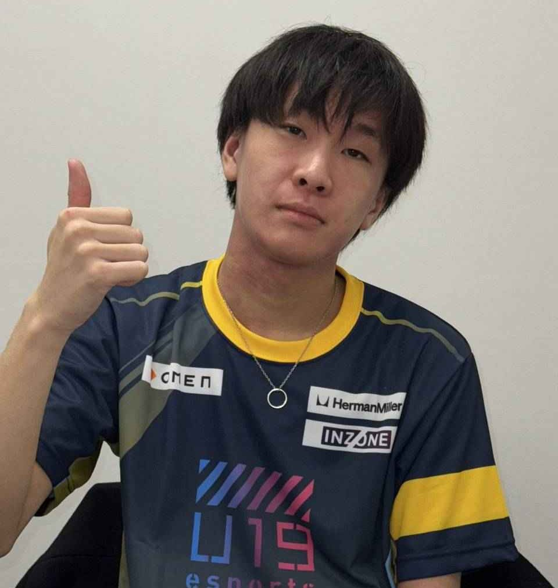

プロフィール

- 渡部匠人
- 2005年9月12日北海道名寄市生まれ
- ゲーム、サッカーをして育つ
趣味
ゲーム、サッカーを始めとしたスポーツ観戦、読書
- ゲーム
- LOLを始めとしたオンラインゲームをメインでプレイしています
- LOLについてはU19eスポーツ選手権2024(19歳以下の全国大会)にて三位に入賞しました
- スポーツ観戦
- 北海道コンサドーレ札幌のサポーターとしてスポーツ観戦をしています
- 高校時代にはクラーク記念国際高等学校野球部の甲子園大会を観戦、応援
- 読書
- ライトノベルをメインとした書籍を読んでいます
キャリア
- 2024年3月 クラーク記念国際高等学校 卒業
- 2024年4月 吉田学園情報ビジネス専門学校ゲームエンジニア学科 入学
- 2025年2月 吉田学園情報ビジネス専門学校ゲームエンジニア学科 在学